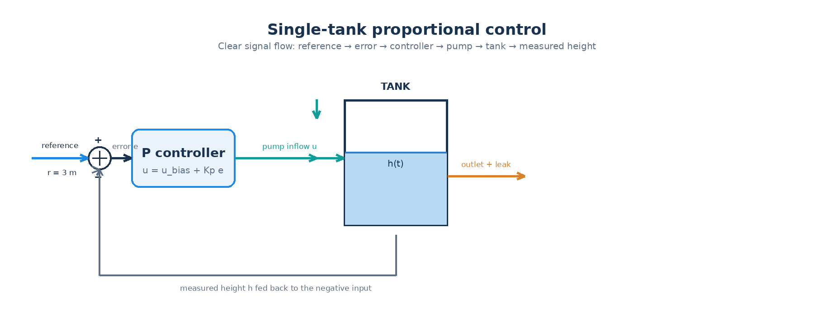
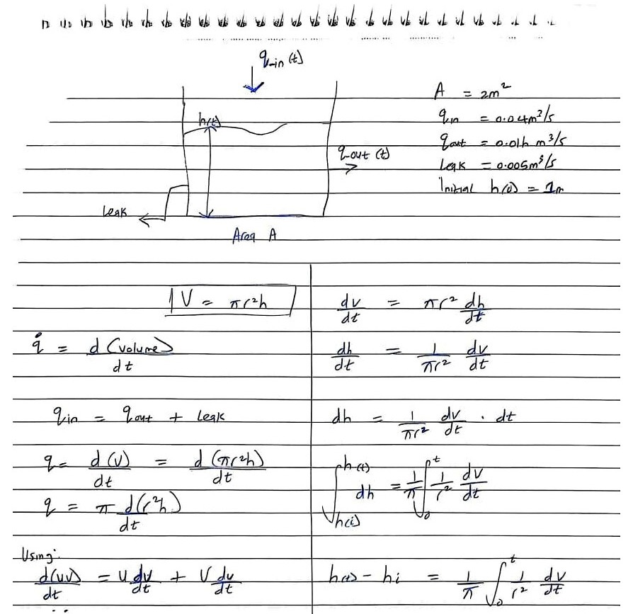
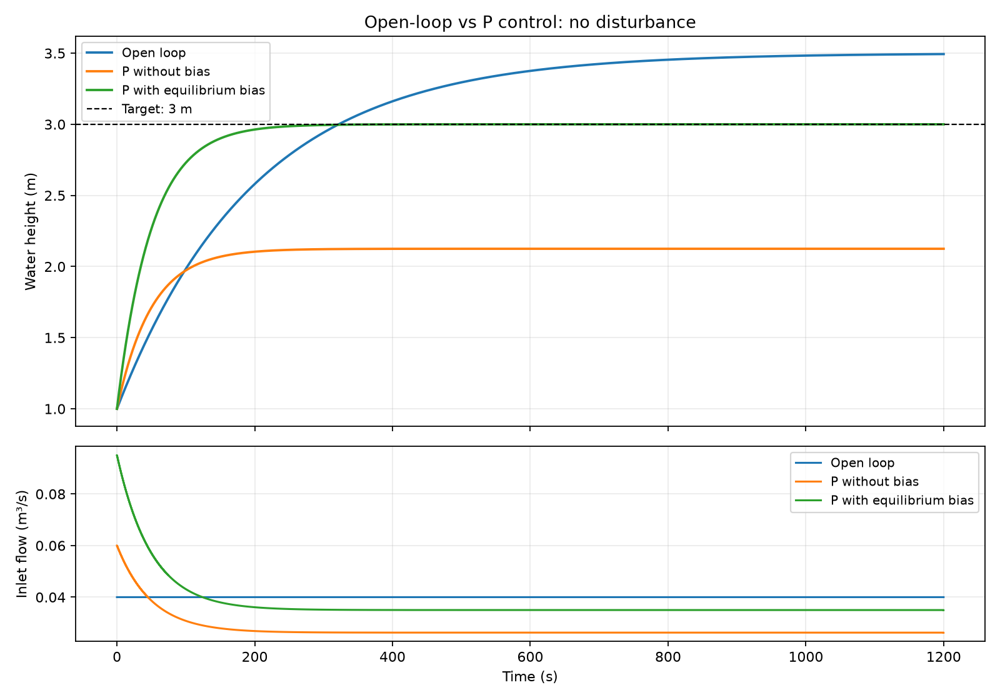
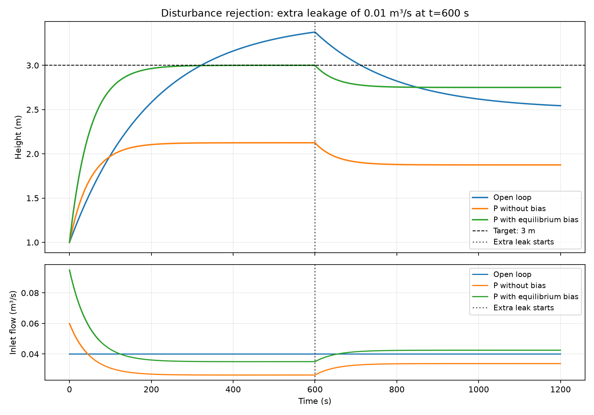
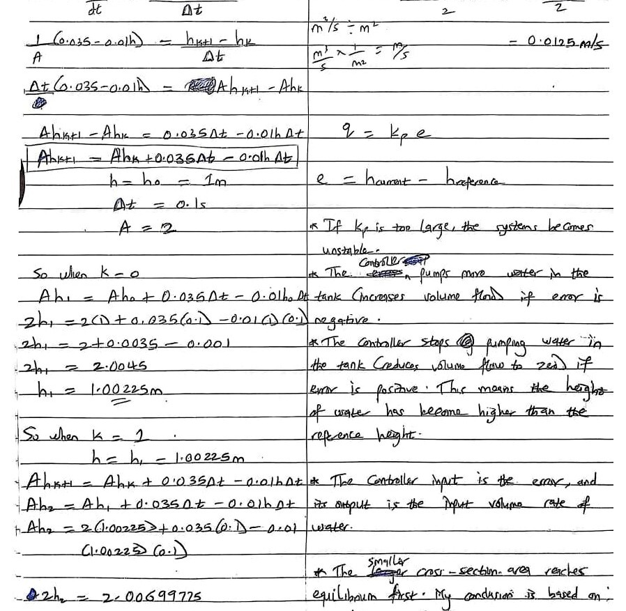

01 · Single tank / P / Engineering report
Proportional control: what feedback can—and cannot—fix
Mathematical model, verified Python results, equilibrium bias, and the permanent error left by an unmodelled disturbance.
Open the interactive companion →
Research question
Can a proportional controller keep a tank at 3 m when normal losses are known—and what happens when an unexpected leak increases the outflow? The main lesson is that an equilibrium bias can cancel known losses, but proportional feedback alone generally needs a nonzero tracking error to overcome a new constant disturbance.
1. System specification and assumptions
| Quantity | Value | Interpretation |
|---|---|---|
| Cross-sectional area A | 2 m² | Cylindrical tank with constant area |
| Inflow (open loop) | 0.040 m³/s | Fixed before feedback control |
| Outlet coefficient k | 0.010 m²/s | qout = kh |
| Nominal leak | 0.005 m³/s | Constant independent withdrawal |
| Initial height | 1 m | Reference step begins below target |
| Reference / pump limits | 3 m / 0–0.100 m³/s | Actuator saturation model |
The accumulation term is A·dh/dt because the stored volume is V = A·h. The model uses a linear outlet and a constant leak; it excludes sensor noise, actuator lag, overflow, and dry-out.

2. Why the bias is needed
With r = 3 m, Kp = 0.03 m²/s, and the nominal leak of 0.005 m³/s, the balancing flow is qbias = kr + qleak = 0.035 m³/s. At h = 1 m, the initial command is 0.035 + 0.03·(3−1) = 0.095 m³/s, within the pump limit.
| Scenario | Predicted equilibrium | Interpretation |
|---|---|---|
| No bias, no added leak | 2.125 m | Large permanent offset |
| Bias = 0.035, nominal leak | 3.000 m | Nominal target maintained |
| Bias + extra leak 0.010 | 2.750 m | 0.250 m permanent offset |
3. Reproduced implementation results
The archived Phase 2 Python project evaluates the controller once per 0.1 s step, holds the inlet command over that step, and advances the tank using Forward Euler. The archived test suite was executed during the report preparation: 11 of 11 tests passed.

For the unsaturated, biased nominal system, the closed-loop time constant is A/(k + Kp) = 50 s, compared with 200 s for the original open-loop model. The archived run reports a 2 cm reference band reached and maintained at approximately 230.1 s.
4. Persistent-leak experiment
At t = 600 s, the existing simulation increases leakage by 0.010 m³/s. The biased P controller eventually settles at 2.75 m; the permanent shortfall is 0.25 m. Its pump output rises enough to balance the new losses at that lower height, not at 3 m.

5. Hand calculation to code

error = target - height[k]
u_raw = bias + kp * error
u = np.clip(u_raw, 0.0, pump_max)
rate = (u - outlet_k * height[k] - leak[k]) / area
height[k + 1] = height[k] + dt * rate6. Verification, reproducibility and limitations
Reproduce the Phase 2 plots using the archived project: install requirements, run the feedback-control module, then run the project tests.
make setup
PYTHONPATH=projects/01-water-tank/src \
python -m water_tank.feedback_control
PYTHONPATH=projects/01-water-tank/src \
python -m unittest discover -s projects/01-water-tank/tests -vThis report includes existing code-generated images; it is not a claim that the web demonstration and the Python archive are the same runtime.
- Control is sampled; the underlying physics is idealized.
- Bias delivers zero error only for the known nominal leakage and target.
- A permanent unknown disturbance moves the P equilibrium, so PI is the logical next comparison.
Source distinction: numerical results and the test count in this report come from the existing single-tank Python archive.
Interactive illustration: Control Lab proportional page.